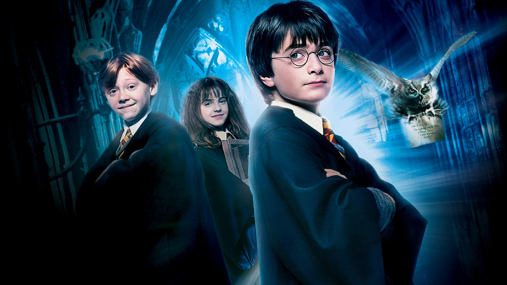
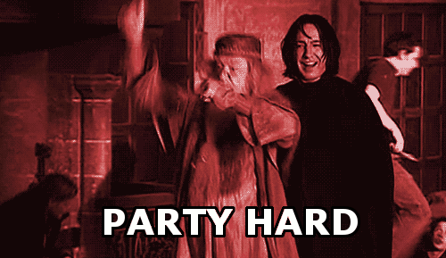

Harry Potter es el nombre por el que se conoce a la serie de novelas de fantasía escritas por J. K. Rowling y las películas basadas en ellas. El principal protagonista de las mismas es el joven mago Harry Potter.

Las novelas están escritas en tercera persona de un modo omnisciente limitado. J. K. Rowling muestra una habilidad para convencer de un modo lógico que existe un mundo mágico: lleno de magos, maldad y criaturas fantásticas. La Saga de Harry Potter ha sido comparada muchas veces con otras sagas similares (en la base de un mundo fantástico, mágico) en las que cabe destacar Las Crónicas de Narnia de C.S. Lewis (de la que cabe decir J. K. Rowling obtuvo cierta inspiración en la relación de cómo entrar a un mundo mágico: Armario (Narnia)-Andén 9 y 3/4 (Harry Potter); y la no menos conocida saga de El Señor de los Anillos de J.R.R. Tolkien
Las novelas de Harry Potter tienen como escenario el Colegio Hogwarts de Magia y Hechicería, un castillo rodeado de montañas y situado al pie de un gran lago en Escocia. Normalmente todos los alumnos llegan a él tomando el Expreso de Hogwarts desde el andén 9 y 3/4,al que se accede por medio de una barrera que divide los andenes 9 y 10 en la estación de trenes King's Cross, Londres.

Hecho por Antonio Jesús Luque Parlón (Todos los derechos reservados por COPYRIGHT)